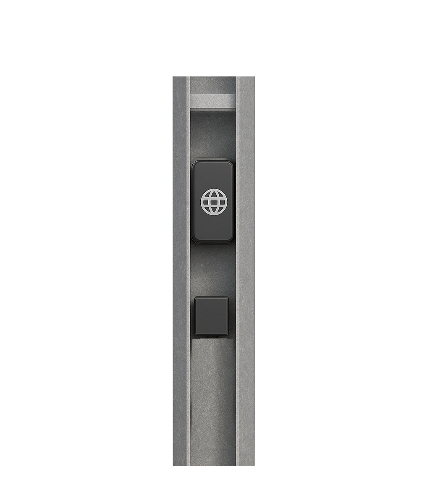
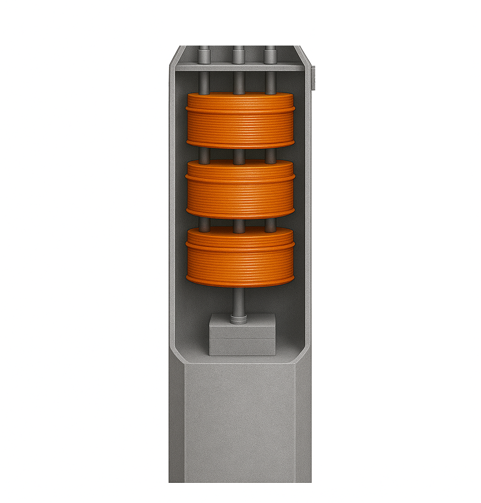

Infraestructura Energética
para la Movilidad del Futuro
POSTEDOR integra en un solo sistema modular el poste de distribución, transformador toroidal sin aceite, panel solar, cargador EV y módulo IoT con gestión blockchain.
¿Qué es POSTEDOR?
Una solución integral de infraestructura energética inteligente que combina poste de distribución, transformador toroidal, energía solar y carga para vehículos eléctricos en un único sistema modular.
Cargador EV Integrado
Estación de carga wallbox integrada en el poste, disponible en versiones de 3.7 kW, 7.5 kW y 11 kW, con conectores Tipo 2 y NEMA.
Transformador Toroidal
Transformador monofásico sin aceite (5, 10 o 15 kVA) con núcleo de acero al silicio, aislamiento Clase B y disipación pasiva por la estructura metálica.
IoT y Telemetría
Módulo IoT empotrado con monitoreo remoto de variables eléctricas, temperatura, humedad y estado operativo vía Modbus TCP/IP y MQTT.
Blockchain Energético
Contrato inteligente para registro de transacciones de carga, trazabilidad de kWh y comercialización descentralizada de energía entre usuarios.
Panel Solar Integrado
Sistema fotovoltaico de 3 kW con paneles en forma de hojas de olivo, diseñado para operación sostenible y reducción de huella de carbono.
Diseño Modular
Poste metálico galvanizado de 12 m con geometría hexagonal y estructura segmentada en 3 tramos para facilitar transporte, instalación y mantenimiento.
Estructura Modular
POSTEDOR se divide en 4 partes funcionales integradas en un poste de 12 metros con 3 tramos segmentados.
 🔌
🔌Cargador de Vehículos Eléctricos
Estación de carga wallbox integrada con potencias de 3.7 a 11 kW, conectores Tipo 2/NEMA y protocolo OCPP 2.0.1.

📡Módulo IoT y Telemetría
Sensores de presión, conductividad, temperatura y flujo. Comunicación Modbus TCP/IP, MQTT y cifrado TLS 1.3.

🔄Transformador Toroidal
Transformador monofásico 5-15 kVA, 13.2 kV → 240/120 V, sin aceite, aislamiento Clase B, disipación pasiva.
 ☀️
☀️Media Tensión y Paneles Solares
Entrada MT 13.2 kV, inversor PV 3 kW, paneles solares de 200W con diseño biomimético de hojas de olivo.
Línea de Tiempo del Proyecto
Fase actual: TRL 5 — Validación de componentes en entorno relevante. Próximo hito: piloto urbano en Medellín.
¿Quieres conocer más?
Explora cada módulo del sistema, revisa las especificaciones técnicas y conoce el impacto de POSTEDOR en la movilidad eléctrica de Medellín.
Comenzar el Recorrido →